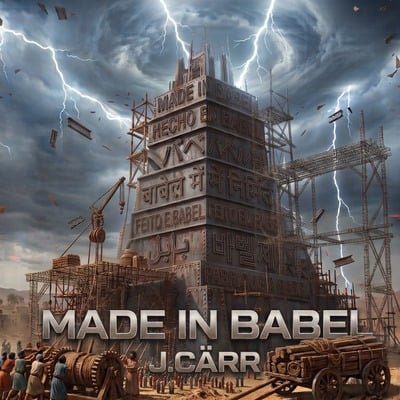

LA HISTORIA
De un desahogo
a un propósito.
J.Cärr empezó a producir durante la pandemia. Con el tiempo, la música se convirtió en una forma de compartir su fe desde Panamá.
Conocer la historiaPRODUCTOR & DJ · PANAMÁ
Christian EDM, Future Bass y Dubstep.
Fe, emoción y energía electrónica.

ÁLBUM CONCEPTUAL
Ocho canciones, siete idiomas y una misma fe. Un viaje entre el Future Bass, el Dubstep y el EDM cristiano.
LA HISTORIA
J.Cärr empezó a producir durante la pandemia. Con el tiempo, la música se convirtió en una forma de compartir su fe desde Panamá.
Conocer la historia